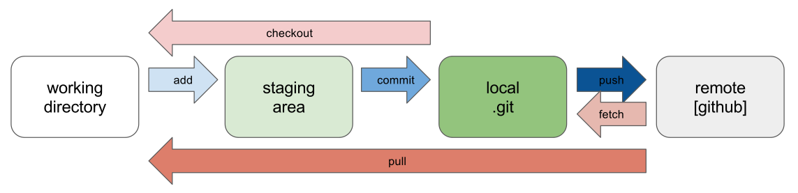

O Git é a ferramenta de controle de versão mais utilizada do mundo. Neste tutorial breve, será demonstrado de maneira simples e prática como começar a usar o Git para auxiliar nos seus trabalhos.
Neste tutorial você aprenderá a:
No final desta página há uma tabela com comandos úteis do git e exemplos!
Para instalar o Git basta entrar neste site e seguir os passos descritos nele. Durante e após a instalação existem algumas configurações importantes. Na hora de escolher o editor de texto para as mensagens de commit (ver mais sobre mensagens de commit na seção de workflow), nós recomendamos que seja escolhido o seu editor de preferência, já que o padrão do git é o vim, que é bastante complicado de usar no começo.
Com o Git instalado, podemos conferir se tudo está correto usando git version no terminal, que retornará o número de versão do Git caso ele esteja instalado e não uma mensagem de erro. Agora podemos fazer duas configurações importantes: definir o seu nome e o seu email.
Para isso vamos usar dois comandos:
Claro que você irá colocar suas informações dentro das aspas.
Nós usaremos o serviço de repositório remoto mais utilizado, o GitHub. O GitHub permite você manter seu código organizado e salvo na nuvem, além de permitir a colaboração entre muitos desenvolvedores por meio de um sistema robusto.
Para começar a utilizar o Git em si, nós vamos precisar criar um repositório remoto no GitHub. Para isso, acesse o site do GitHub e crie uma conta. Caso já tenha uma, entre nela. Vamos deixar a configuração da conta de lado e pular direto para a ação, criando seu primeiro repositório. Basta acessar sua conta do GitHub, ir à aba de repositórios e clicar o botão verde escrito "New" ou "Novo". Dê um título pro seu repositório e selecione a opção que irá adicionar um arquivo README.md, isso será útil para o próximo passo.
O arquivo README.md normalmente é usado para uma descrição completa do projeto. No nosso caso nós vamos apenas usá-lo para mostrar que o próximo passo está funcionando: entre numa pasta vazia ou crie uma para seu primeiro projeto Git pelo terminal (usando ls e cd), digite git clone e a URL do seu repositório e agora você tem uma cópia do seu repositório git no seu computador, completo com seu arquivo README.md
A última parte deste capítulo pode ter parecido um pouco corrida, porque foi! Com seu primeiro repositório, existem diversas possibilidades. Nós achamos que o jeito mais fácil de ensinar o Git é na prática, e vamos fazer isso no próximo capítulo.
Muitas vezes, ao se falar de git, se fala sobre o seu workflow, ou seja, o "fluxo de trabalho" que é utilizado ao fazer um projeto. Ao se acostumar, essas etapas tornam-se naturais. Mesmo assim, é importante ressaltar no começo as fases do desenvolvimento, como ilustradas na imagem abaixo.
Todo workflow começa criando um repositório. As duas principais maneiras são com o comando git init ou com o git clone. A diferença entre os dois é que o git init cria a estrutura de trabalho localmente, deixando a linkagem com o GitHub ou serviços remotos para outros comandos, enquanto o git clone, como o nome diz, clona um repositório da internet, podendo este ser seu próprio. É recomendado começar com o git clone, pois ele é muito mais fácil de usar!
Com o repositório clonado ou iniciado, pode-se começar a trabalhar. Olhando a imagem, agora estamos no bloco da esquerda, o diretório de trabalho, e fazemos alterações usando nosso editor de texto de preferência. O Git já estará registrando as alterações.
Agora já estamos com um tanto de alterações feitas e vamos prosseguir para os próximos passos. A próxima etapa é enviar as alterações do diretório de trabalho para o git local. Para fazer isso temos dois comandos essenciais: git add e git commit. Algumas alterações já vão diretamente quando usamos o git commit, algumas alterações, como mudanças no texto de arquivos, tem que ser adicionadas com o git add. O comando git status sempre te dará uma ideia do que deve ser feito, então nunca deixe de usá-lo.
O comando acima nos demonstra como um dos arquivos não será rastreado sem usar git add!

Agora as alterações estarão presentes no próximo commit
Alguns comandos úteis são o git commit -a, que já "inclui" o git add, e o git commit -m "Mensagem", onde "Mensagem" é uma mensagem descritiva das alterações feitas no commit. Isso nos trás para o próximo tópico: mensagens de commit. Ao usar o git commit, o git abre o editor escolhido na instalação do git (que pode ser alterado nas configurações) para que o usuário escreva sua mensagem de commit. Não se espante se ele abrir o vim ou outro programa "arcaico" e pesquise como usá-lo! (no vim, use "i" para entrar no modo de inserção de texto e depois aperte esc e ":wq" para salvar e sair).
Com o commit feito, só um comando nos separa de enviar as alterações para o GitHub, o git push. Na primeira vez que ele é usado, é necessário que você entre na sua conta do GitHub. O git push envia os commits para o repositório remoto. É como se usássemos add e commit para carregar um canhão e o push acende o pavio!

Agora, para puxar alterações do repositório remoto para o diretório de trabalho, basta usar o comando pull, que trás uma versão atualizada do repositório direto para o seu PC (isso é mais útil ao programar em duas máquinas diferentes ou com mais de uma pessoa). Finalizamos dessa maneira a explicação do workflow, e a imagem do workflow acima deve fazer muito mais sentido agora! Apenas dois comandos não foram descritos, por não serem tão úteis nesse momento. Vale ressaltar que o workflow descrito está mais voltado ao trabalho individual. As funções de trabalho em equipe são um oceano imenso a ser explorado e nós incentivamos futuras pesquisas no tópico.
| Comando Git | Descrição | Exemplo de uso |
|---|---|---|
| git clone | Cria uma cópia de um repositório existente. | git clone https://github.com/fcarvalh6/icc-html-1 |
| git branch | Lista, cria ou exclui branches. | git branch feature-x |
| git checkout | Alterna entre branches ou commits. | git checkout feature-x |
| git status | Exibe o estado do diretório de trabalho e da área de stage. | |
| git diff | Mostra as diferenças entre commits, entre um commit e a árvore de trabalho, etc. | |
| git add | Adiciona o conteúdo de arquivos à área de stage. | git add projeto/index.html |
| git commit | Registra as mudanças no repositório. | git commit -m "desenvolvimento" |
| git push | Atualiza referências remotas junto com os objetos associados. | git push origin main |
| git pull | Busca e integra com outro repositório ou branch local. | git pull origin main |
| git revert | Cria um novo commit que desfaz as mudanças feitas por um commit anterior. | git revert 1234567 |
| git merge | Mesclar suas alterações de um branch ao branch principal. | git merge feature-x |
| git stash | Guarda mudanças no diretório de trabalho sujo temporariamente. | |
| git rm | Remove arquivos do diretório de trabalho e da área de stage. | git rm arquivo.txt |
| git config | Define ou obtém opções de repositório ou globais. | git config --global user.name "Seu Nome" |
| git reset | Redefine o HEAD atual para o estado especificado. | git reset --hard 1234567 |
| git remote | Gerencia o conjunto de repositórios rastreados. | git remote -v |
| git fetch | Busca atualizações de um repositório remoto. | git fetch origin |
| git show | Mostra vários tipos de objetos. | git show 1234567 |
| git help | Exibe informações de ajuda sobre o Git. | git help commit |
| git rebase | Aplica novamente commits no topo de outro branch. | git rebase main |
| git blame | Mostra a revisão e o autor que modificaram cada linha de um arquivo pela última vez. | git blame arquivo.txt |
| git tag | Cria, lista, exclui ou verifica um objeto de tag assinado com GPG. | git tag v1.0 |